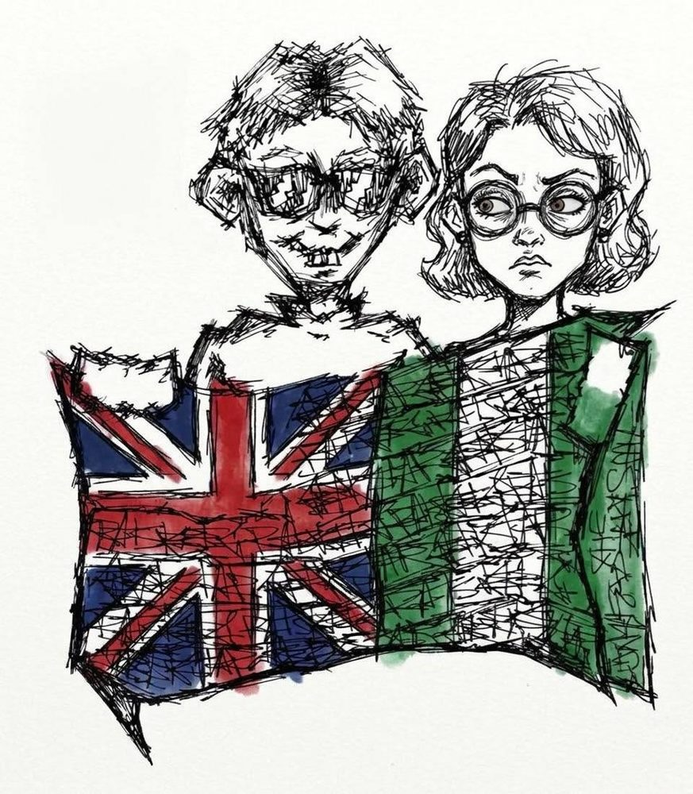
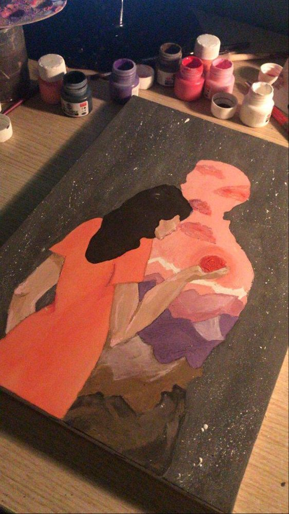
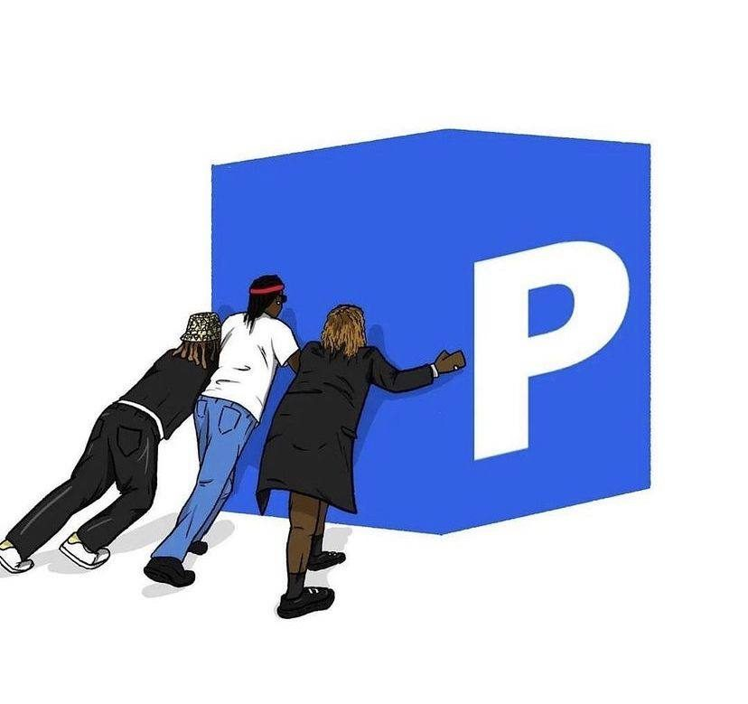
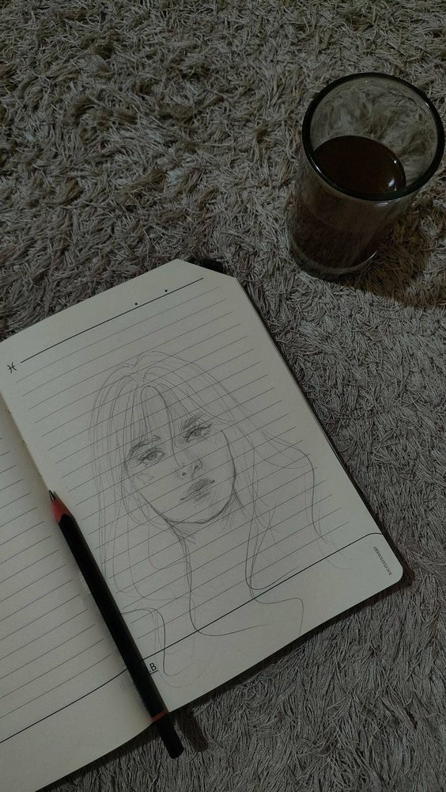
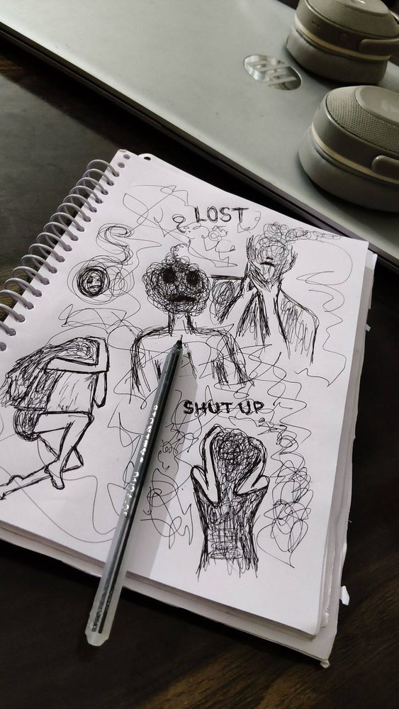
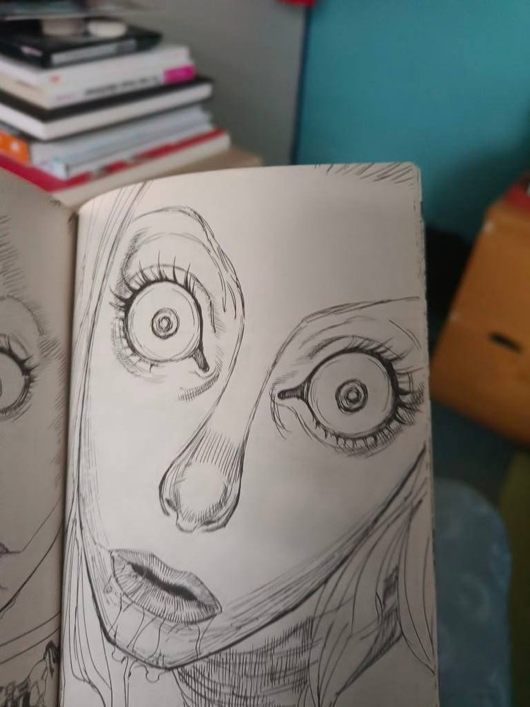

Art Gallery
A collection of my drawings, paintings and illustrations. Tap any picture to see it bigger.






A collection of my drawings, paintings and illustrations. Tap any picture to see it bigger.





